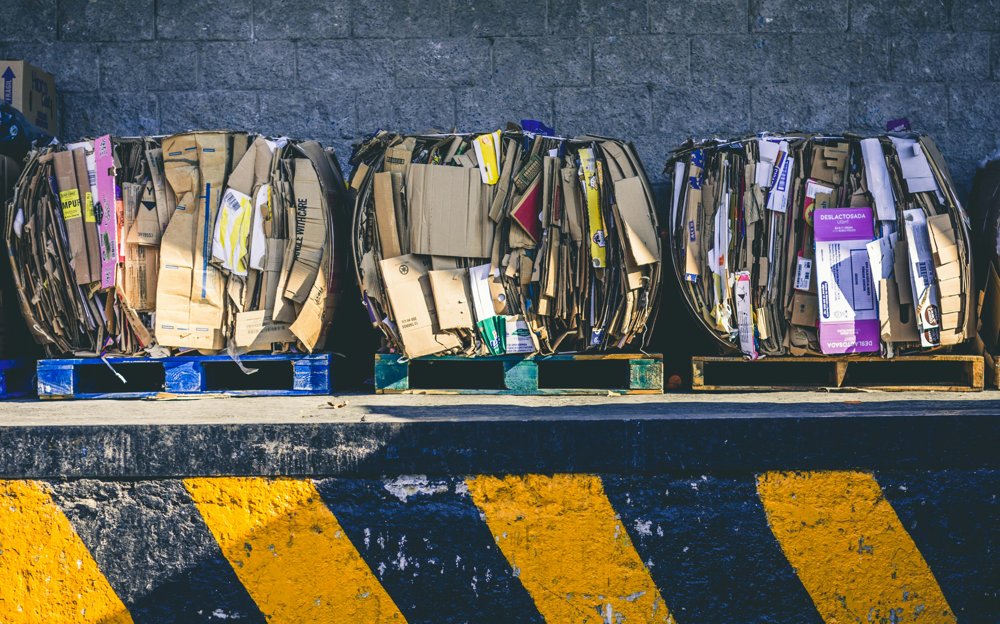

Os proponemos divertidas manualidades para hacer en casa, junto a los más pequeños, con las que podréis decorar vuestro hogar de una forma diferente, a un precio muy bajo y además, lo más importante, ayudando al medio ambiente.
Reciclar es responsabilidad de todos, y si cada uno se encarga de aportar su pequeño granito de arena, juntos conseguiremos un mundo mejor. Con pequeños detalles, podemos ayudar a preservar el medio ambiente que nos rodea y asegurarnos de reducir la huella ecológica. que dejamos en nuestro planeta.

Te explicamos cómo es la cadena, desde que los envases domésticos se ponen en el mercado hasta que llegan a las plantas de reciclaje. Verás, además, de qué forma este proceso contribuye a impulsar la economía circular.

Accede a nuestro nuevo portal de transparencia. En el podrás encontrar información más detallada sobre nuestra actividad..
¿Qué son las 3Rs? Las tres Rs son tres palabras que empiezan por esa letra y que sirven para ilustrar las acciones necesarias que nos guían en el camino hacia una economía circular. Pero ¿qué es la economía circular? Antes de conocerla tenemos que entender otro concepto: la economía lineal. La economía lineal ha sido el modelo que ha protagonizado hasta ahora la historia de la humanidad. ¿En qué consiste? ¡Muy sencillo! En crear productos, usarlos y después desecharlos. Este modelo promueve la obtención de nueva materia prima cada vez que se quiere fabricar un nuevo producto, generando un gran impacto ambiental. La economía circular cambia este pensamiento. Las 3Rs – Reducir, Reutilizar y Reciclar – hacen que el proceso de fabricación de un producto sea más sostenible, ahorrando en recursos y energía. ¿El objetivo? Aprovechar los recursos que ya tenemos. La economía circular se está abriendo paso, y tiene como fin último la sostenibilidad. Es el momento de ir más allá…